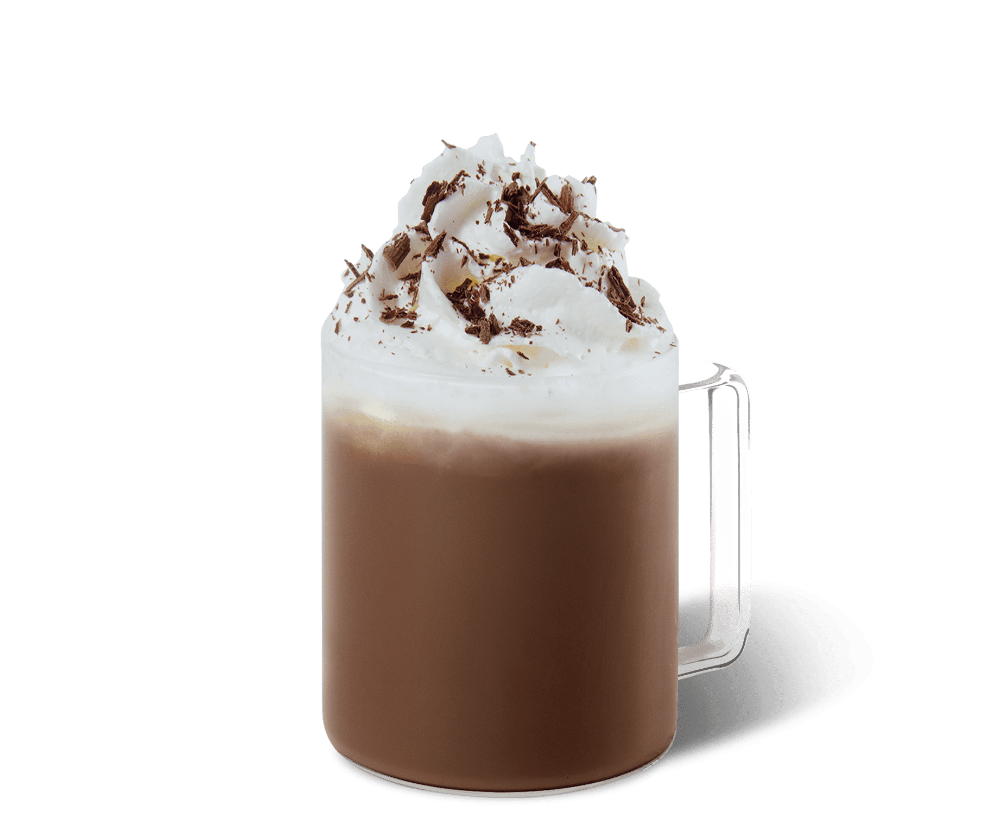

Recept van de maand
Koffierecepten
Maak een coole ijskoffie
Geef jouw eigen draai aan jouw ijskoffiemomenten thuis met jouw koude Starbucks® favorieten.

-
5 Mins
Sparklin Espresso met Munt
Een bruisende twist
-
5 Mins
Iced Almond Latte
Verfrissend en heerlijk
-

4 Mins
Cappuccino met havermelk
Plantaardige klassieker
-

4 Mins
Iced Cappuccino
Verfrissend koel
-

2 Mins
Espresso Con Panna
Heerlijk simpel om te maken
-

2 Mins
Starbucks® Blonde Vanilla Latte
Soepel en Fluweelachtig
-
3 Mins
Vanilla Latte
Een klassieker met een twist
-
3 Mins
Gouden Kurkuma Latte
Een spicy nieuwe twist
-

3 Mins
Cappuccino
Een Starbucks® klassieker
-

3 Mins
Caffe Americano
Heerlijk simpel
-

3 Mins
Spiced Flat White
Heerlijke smaaktonen
-
2 Mins
Latte Macchiato
Vol van smaak
-

3 Mins
Iced Caramel Macchiato
Rijk met tonen van vanille
-

3 Mins
Caffe Mocha
Een Starbucks® klassieker